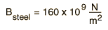
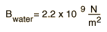
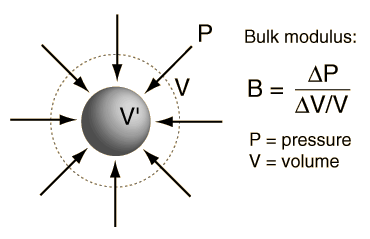

Bulk Elastic Properties
The bulk elastic properties of a material determine how much it will compress under a given amount of external pressure. The ratio of the change in pressure to the fractional volume compression is called the bulk modulus of the material.
|
A representative value for the bulk
modulus for steel is

and that for water is

The reciprocal of the bulk modulus is called the compressibility of the substance. The amount of compression
of solids and liquids is
seen to be very small. |
 |
The bulk modulus of a solid influences the speed of sound and other mechanical waves in the material. It also is a factor in the amount of energy stored in solid material in the Earth's crust. This buildup of elastic energy can be released violently in an earthquake, so knowing bulk moduli for the Earth's crust materials is an important part of the study of earthquakes. The bulk modulus is a factor in the speed of seismic waves from earthquakes.
A common statement is that water is an incompressible fluid. This is not strictly true, as indicated by its finite bulk modulus, but the amount of compression is very small. At the bottom of the Pacific Ocean at a depth of about 4000 meters, the pressure is about 4 x 107 N/m2. Even under this enormous pressure, the fractional volume compression is only about 1.8% and that for steel would be only about 0.025%. So it is fair to say that water is nearly incompressible. Reference: Halliday, Resnick, Walker, 5th Ed. Extended.
|
Index
Periodic motion concepts |